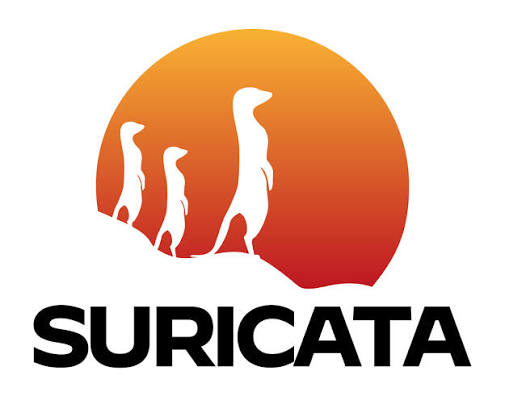

Phân tích gói tin chuyên sâu: Suricata và Zeek bổ trợ nhau
Hai công cụ nhìn cùng một luồng dữ liệu bằng hai cách. Một cái tìm dấu hiệu tấn công đã biết, một cái ghi lại hành vi để bạn điều tra và phát hiện điều chưa có chữ ký.

Suricata 8.xEngine IDS/IPS đa luồng, so khớp chữ ký theo thời gian thực.
- Kiểm tra sâu gói tin (DPI) và giải mã giao thức tầng ứng dụng
- Rules CVE và Emerging Threats, tự cập nhật hằng ngày
- Ra cảnh báo có Classification và Priority để Smart Action xử lý
 Zeek Security Monitoring
Zeek Security MonitoringKhung giám sát mạng, không dựa vào chữ ký mà ghi lại những gì thực sự diễn ra.
- Log có cấu trúc cho kết nối, DNS, HTTP, TLS, file
- Soi hành vi bất thường: DNS tunneling, beacon định kỳ, quét chậm
- Dữ liệu điều tra sau sự cố: ai nói chuyện với ai, lúc nào, bao lâu